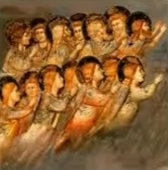
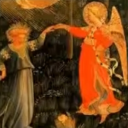

| SU VIDA | |||
|
|||
| SU OBRA | |||
|

 |
| Retrato de Dante Alighieri, la ciudad de Florence y la alegoría de la Divina Comedia de Domenico di Michelino (1465) El poeta, que muestra su obra abierta, está delante del paisaje simbólico de la Divina Comedia: a la izquierda, el infierno, al fondo el paraíso, al que conducen los siete círculos del purgatorio; a la derecha, la ciudad de Florencia. |
La Divina Comedia Este poema fue escrito por Dante Alighieri durante su exilio entre 1304 y 1321, según Dante: “A la mitad del viaje de nuestra vida / Me encontré en una selva oscura / Por haberme apartado del camino recto”. Fue hace 700 años, el año del gran jubileo en Roma, ordenado por el Papa Bonifacio VIII. Dante tenía 35 años (la mitad del viaje de su vida según los criterios de la época) y es en la primavera de 1300, en Pascua, cuando emprende su viaje hacia el más allá. Titulada Comedia por su autor (en el sentido de la obra porque el final es feliz mientras que el principio no lo es) y renombrada en el siglo XVI por un editor de Venecia, Ludovico Dolce, Divina Commedia, la obra maestra dantesca (empezada hacia 1304 y acabada hacia 1321) está compuesta por 14233 versos repartidos en tercetos (terza rima), reagrupados en 100 cantos distribuidos a su vez en tres partes:
Esta crónica pronto se hizo famosa. La gente del pueblo, los artesanos de la Toscana se aprendían El Infierno de memoria y más tarde, durante su exilio, los Príncipes ilustrados llamaban a Dante para oírle hablar de lo que él llamaba en su Paraíso, el poema sagrado. La Florencia de Lorenzo de Médicis en el siglo XV profesaba un verdadero culto a Dante. Leonardo, Rafael y Miguel Ángel lo llamaban maestro y Botticelli se encerró durante 10 años para ilustrar cada uno de los 100 cantos. En el siglo XVI, Francisco I y su hermana Margarita habían fundado una academia dantesca donde se leía todas las noches la Comedia. El nombre de Dante fue grabado mucho después de su muerte por Pablo VI en el baptisterio de Florencia donde había sido bautizado. Jorge Luis Borges, en “Nueve ensayos sobre Dante” comentó de manera muy atractiva la obra de Dante. Entre los cientos de personajes de la Comedia, retuvo a cuatro, Ulises, Ugolín de Pisa, Francisca y Beatriz. Dante, de camino hacia el Paraíso, trabaja en el más cristiano de los libros jamás escritos por la mano humana y según Borges, la consciencia de lanzarse a una aventura peligrosa que le expondría a la venganza de sus enemigos permitió a Dante identificarse con Ulises. Dante escucha con una piedad infinita el discurso de Francisca, mujer adúltera, en lugar de regañarla. Según Borges, Dante admira y envidia a esos amantes malditos que son Paolo y Francisca, condenados a dar vueltas sin fin en las llamas porque se profesan un amor recíproco. Y tal no fue el caso de Dante y Beatriz. Es una obra de una rara densidad que abarca todo aquello que podría contener un espíritu humano de la época y que sorprendió a sus coetáneos por la juventud, el vigor y la frescura de su lenguaje. La estructura de la comedia está claramente basada en el número 3 que explica la trinidad divina y el 10 que es un número perfecto (Beatriz llega en el canto XXX del Purgatorio y pronuncia el nombre de Dante en el verso 73). Es la narración de un viaje fantástico al más allá llevado a cabo en el transcurso de la semana santa del año 1300 por el propio Dante, perdido en mitad del camino de su vida en el bosque oscuro del pecado y salvado del peligro por la intercesión de la “bienaventurada” Beatriz y emprendiendo un peregrinaje salvador al otro mundo, guiado primero por Virgilio (el gran poeta romano que simboliza la razón humana) en el Infierno y en el Purgatorio y luego por Beatriz en el Paraíso (que simboliza la “ciencia” divina). Este viaje llevado a cabo por Dante tiene un significado alegórico y representa el itinerario que el hombre debe recorrer con el fin de escapar de las pasiones terrenales para llegar a la iluminación de las libertades morales y de la fe, un camino que va del instinto y la ignorancia hacia la conciencia de la verdad y la salvación. Dante nos expone así su concepción del Más allá por medio de una peregrinación sobrenatural sucesivamente por el Infierno, el Purgatorio y el Paraíso. Después de haber asistido a varias procesiones místicas y a metamorfosis fantasmagóricas, Dante ve aparecer a Beatriz a su llegada al Paraíso, al tiempo que Virgilio de desvanece discretamente. Prosigue, pues, con Beatriz su viaje de ascensión al Paraíso, representado según las teorías de Aristóteles y de Ptolomeo y llegará a la visión inefable de Dios con San Bernardo, que le guiará entonces. La Comedia se acaba después de la integración absoluta del saber filosófico en la verdad de Dios, la elevación del amor al rango de principio de todo bien y de todo mal, la resolución de los problemas políticos por la doctrina de la legitimidad universal y eterna del Imperio. La Divina Comedia se inscribe en la larga tradición de visiones del más allá y da gran importancia a la tradición greco-latina. El viajero del más allá está rodeado de poetas y tiene preocupaciones de poeta. El poema está escrito en primera persona pero el nombre de Dante sólo será pronunciado una sola vez por Beatriz. Esta estructura prismática del yo « locutor » no tiene precedente y se anticipa a las investigaciones literarias modernas. Dante es el protagonista de su poema, él está omnipresente pero no es el tema central. No se puede dar una imagen esquemática del mundo de la Comedia pero es posible esbozar el orden que precede a la descripción de los tres reinos de la condenación eterna, de la penitencia y de la beatitud. Existe en el Infierno una fuerza patética, en el Purgatorio una emoción más penetrante y en el Paraíso el milagroso triunfo de lo imaginario. |
|
El Infierno
De los tres cánticos de La Divina Comedia, el Infierno es el más conocido, el más popular. El Infierno, situado bajo Jerusalén, se presenta como una sucesión de 9 círculos concéntricos cada vez más estrechos a medida que uno se hunde hacia el centro. Los condenados se distribuyen siguiendo la clasificación de los pecados de Aristóteles (después del círculo del limbo de los muertos no bautizados, la lujuria, la gula, la avaricia, la prodigalidad, la cólera, la pereza, la herejía se castiga en el sexto círculo, la violencia en el séptimo, el fraude, los seductores, los aduladores en el octavo, la traición en el noveno con Lucifer. Los círculos están a su vez divididos en zonas). Virgilio y Dante bajarán uno por uno los círculos del abismo del Infierno. Tempestad, hielo, fuego, crueldad de los demonios, cuanto más nos hundimos en el pecado, más nos acercamos a Lucifer y más sufrimos. El Infierno contiene los cantos más conocidos y episodios célebres, como Francisca de Rimini (V) muerta de amor, pasión con la que los románticos del siglo XIX se identificaron (Dante y Beatriz no constituyen la única pareja destacable de La Divina Comedia). En el segundo círculo del Infierno, el de los lujuriosos, los pecadores carnales, residen Francisca y Paolo, los protagonistas de un drama que la tradición sitúa en 1275. Francisca De Rimini es la esposa de Giovanni Malatesta pero está enamorada de su cuñado Paolo, que también la ama. Giovanni sorprende a los amantes abrazados y los asesina. Cuando se encuentra con Dante, Francisca acepta contar el nacimiento de su amor: “Leíamos un día por pasatiempo las aventuras / de Lancelote, y de qué modo cayó en las redes del Amor / estábamos solos y sin abrigar sospecha alguna. / Aquella lectura hizo que nuestros ojos se buscaran muchas veces / y que palideciera nuestro semblante / Mas un solo pasaje fue el que decidió de nosotros. / Cuando leímos que la deseada sonrisa de la amada / fue interrumpida por el beso del amante, / éste, que jamás se ha de separar de mí / me besó tembloroso en la boca; / el libro, y quien lo escribió fue para nosotros otro Galeoto. / Aquél día ya no leímos más". Numerosos pintores, como Ingres han representado esta escena. Farinata degli Uberti (X), Pedro della Vigna (XIII), Brunetto Latini (XV), Guido Da Montefeltro (XXVIII), Ulises, que le cuenta su último y fatal viaje más allá de las columnas de Hércules (o sea, los límites autorizados del conocimiento humano), el enigma del conde Ugolín, víctima de un cruel arzobispo y quizá devorador desesperado de sus propios hijos, se cruzan también, entre otros, en el viaje de Dante. Virgilio tendrá que agarrarse a los pelos de Lucifer tricéfalo, atrapado en el hielo, para alejarse de éste con Dante pegado a él (episodio terrible donde vemos a Judas, pecador absoluto, con la cabeza a medio tragar por la boca de la cabeza roja central de Lucifer, y a Bruto y Casio, culpables de crimen de lesa majestad contra el Emperador romano César, al revés, con los pies saliendo por las dos bocas laterales de las cabezas blanca y negra de Lucifer). Hace falta toda la autoridad de Virgilio para alejar a Dante de la piedad que despiertan en él los tormentos de los condenados. |

|
El Purgatorio  El Purgatorio, situado en las antípodas de Jerusalén, en el hemisferio austral, tiene la forma de una montaña de pan de azúcar. Después de haber atravesado su base formada por una playa circular, los viajeros prosiguen hacia arriba por una pendiente escarpada, el antepurgatorio, lugar de espera donde se expía la negligencia tanto política como religiosa. Aquí renace la esperanza. La lujuria, la cólera, la envidia, la gula han traído aquí a una humanidad que no ha insensibilizado con sus faltas; es el arrepentimiento lo que trae aquí a los pecadores en el camino a la salvación. Escalan entonces siete cornisas cruzadas circularmente sobre su flanco y que corresponden a cada uno de los pecados capitales. El Purgatorio está plagado de invectivas políticas con Catón de Utica. Se encuentra con Manfredo, el desafortunado heredero de Federico II, la feroz descripción moral del valle del Arno (XIV), la acusación de de Hugo Capeto contra la monarquía francesa (XX). En la cumbre de esta montaña, Dante se vuelve a encontrar a Beatriz, dispuesta a conducirle al Paraíso, que pronuncia por una sola y única vez el nombre de Dante, mientras que Virgilio se eclipsa. Pero aquella que antaño fuera una mortal tiernamente amada, asume en esta ocasión una cara muy diferente: desde ahora desencarnada, se convierte en una alegoría, el símbolo de la Verdad, una figura mediadora, a semejanza de la Virgen, sin la ayuda de la cual, el pecador que es Dante no sabría acceder al reino de los cielos. |
|
El Paraíso  El núcleo de este gran proyecto era en realidad el Paraíso para mostrar a Beatriz triunfante en la alegría del Paraíso y “decir de ella lo jamás se ha dicho de ninguna”. El Paraíso es, pues, una forma de exaltación de una mujer. También permite a Dante exponer sus ideas religiosas. De la luna al imperio pasando por los planetas y las estrellas, el Paraíso está formado por 9 cielos más el Imperio celeste o sede de Dios, que corresponden cada uno a un grado de felicidad. La felicidad de los elegidos se mide por la intensidad de la luz, de la alegría y del amor que les hacen dar vueltas en un transporte eterno. El Paraíso está en continuo movimiento y el viajero no percibe su propio movimiento sino a través del crecimiento progresivo de la belleza de Beatriz. Este lugar de felicidad perfecto es insostenible porque reina un exceso de emoción, de energía y de percepción. Es necesaria una metamorfosis interior para soportar la belleza de la Elegida y el esplendor de la Música y de la Luz. Describir el Paraíso vuelve a traspasar lo humano con las palabras. Todo el Paraíso está medido sobre la imposibilidad de escribir el Paraíso. Nos encontramos a Justiniano, Carlomagno, San Bernardo. Las más grandes figuras de la cristiandad están allí para saludar a Dante, un bienaventurado en potencia. Allí leemos el elogio de San Francisco y de Santo Domingo que conduce a la acre denuncia de sus discípulos degenerados, del reencuentro del poeta con su tatarabuelo Cacciaguida (como Eneas se encuentra con su padre Anquises en la Eneida de Virgilio) que le confirma la antigüedad de su linaje y denuncia la decadencia moral y política de la Florencia contemporánea. Dante tendrá que pasar un triple examen: ante San Pedro sobre la fe, ante Santiago sobre la esperanza, ante San Juan sobre la caridad. Al final de esta procesión celestial, Beatriz desaparece para dejar su lugar a San Bernardo para la última etapa. San Bernardo hará una plegaria a la Virgen por Dante antes de que éste abra sus ojos a la claridad divina, tratando los últimos cantos de este Paraíso sobre la rarefacción luminosa, la más abstracta, la más pura (oh luz eterna, que en ti solamente resides). El poeta ya no tiene palabras para describir el éxtasis que le embarga. Estos pasajes ilustres están comprometidos y no les falta relación con la realidad política contemporánea (luchas comunales, conflictos dinásticos, debilidades y compromisos de la Iglesia, el infructuoso intento de restauración del poder imperial en Italia con Enrique VII de Luxemburgo). A medida que la Comedia avanza, el horizonte político se ensancha de Florencia a la Toscana, de la Toscana a Italia, de Italia a Europa, de Europa a la tierra entera. Se puede observar que Dante no escribe en ninguna parte el nombre de su familia, de su padre, de su madre, de sus hijos, y que la vanidad de la autobiografía le es ajena. Los rasgos otorgados a su persona son lo que la hacen muy representativa de la humanidad entera en busca de felicidad terrenal. El mundo descrito por Dante aparece a veces como un mundo de antaño por su contenido histórico y doctrinal pero se revela más actual por su esencia moral, su angustiosa incertidumbre sobre el futuro, portador para Dante de un próximo fin de los tiempos, por la dimensión planetaria donde se desarrolla, por el lenguaje poético de comprensión ilimitada. Hay que leer esta obra en su conjunto y no pararse en fragmentos escogidos para comprender los derroteros del alma, las esperas ansiosas de grandes esperanzas y las alegrías sobrehumanas. La intención general de La Divina Comedia es el del viaje de un hombre hacia Dios que se consigue por la visión de la Trinidad. La enseñanza del poema se dirige a todos y es conforme a la filosofía y a la teología escolásticas de los siglos XII y XIII. Ésta no es una obra de teología aunque Dante sea un poeta cristiano. Dante es igualmente el primero en integrar la Iglesia en el devenir de las sociedades humanas y en concebir una historia de la Iglesia con momentos de gloria y periodos de crisis. Es crítico e incluso pronuncia invectivas contra los papas (el episodio de su vida con Bonifacio VIII) y recuerda con fuerza la absoluta renunciación de la Iglesia primitiva. Dante ama Florencia y nunca ha renunciado a pertenecer a una comunidad güelfa que había perseguido a los gibelinos. Dante estima sin embargo que “el bien vivir” en sociedad y la felicidad terrenal son tan importantes como la felicidad eterna, y así se aleja fuertemente de la tradición agustiniana dominante de su época. |